Introduction - CLIMATE CONTROL - MISCELLANEOUS
- Path
- Descriptions > 50 AUXILIARY UNITS > 5010 CLIMATE CONTROL - MISCELLANEOUS > Introduction - CLIMATE CONTROL - MISCELLANEOUS
- Kind
- system description
- Applies to
- all engines; all production periods
- Interactive page
- https://sloeber94.github.io/elrnDB-fDbl/en/#/2585414
Applies to: all engines; all production periods
MANUALLY OPERATED AIR CONDITIONING - HEATER ASSEMBLY
The evaporator - heater - distributor assembly represents the main component in the manually operated climate control and heating system.
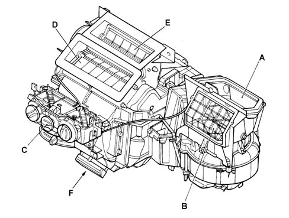
A. Outside air intake B. Inside air intake (recirculation) C. Control unit D. Defroster air vent flap E. Front air vent flap F. Footwell air vent flap
Applies to: all engines; all production periods
MANUALLY OPERATED AIR CONDITIONING - HEATER ASSEMBLY
The following components distinguish the climate control from the heater:
- An evaporator (not present on the heater)
- Electronic thermostat (not present on the heater)
- Central compressor activation LED (amber) on the fan speed control (not present on the heater)
- Compressor activation control on the fan speed control (not present on the heater).
HEATER CONTROLS
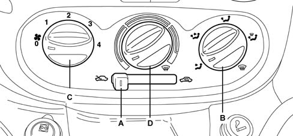
A. Recirculation knob B. Air distribution knob C. Fan/compressor knob D. Warm/cold air mixer knob
Applies to: all engines; all production periods
MANUALLY OPERATED AIR CONDITIONING - HEATER ASSEMBLY
System functions are controlled by three rotary controls and one lower centre sliding control, as illustrated in the figure.
AIR CONDITIONER CONTROLS
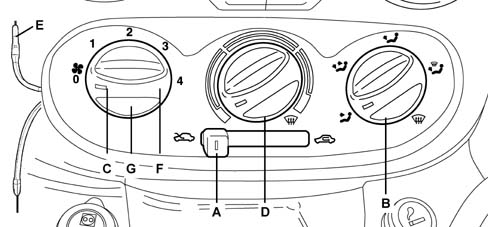
1 Flexible cable 2 Warm/cold air mixer knob 3 Fan/compressor knob 4 Recirculation knob 5. Air distribution knob 6. Air conditioner symbol 7. Air conditioner activation LED
Applies to: all engines; all production periods
MANUALLY OPERATED AIR CONDITIONING - HEATER ASSEMBLY
The controls for the air temperature (2), air distribution (5) and air recirculation (4) are connected to the flaps via flexible cables. The central fan speed control (5) is an electrical device with a sliding contact.
Pressure must be exerted on the air speed control (3) to switch the compressor on and off.
All the controls are located in the ergonomically designed centre console incorporated in the dashboard and they are used, respectively, to adjust the:
- Air temperature (2), by blending warm and cold air
- Fan speed (3), via the four speed fan
- Air distribution (5), this control is designed to allow the air introduced into the vehicle to reach all areas of the passenger compartment via special vents that are present in some outfits and absent in others.
Applies to: all engines; all production periods
R 134A AIR CONDITIONING SYSTEM COOLANT
The gas used in this system is a TETRAFLUOROETHANE type which is considered environmentally friendly under EC law.
R134a gas cannot be used in systems which run on Freon because its different molecular composition can permeate some components (e.g. seals, pipes, etc.). For this reason parts of systems in which environmentally friendly gases are used ARE NOT INTERCHANGEABLE UNDER ANY CIRCUMSTANCES with those designed to run on Freon.
For this reason the operation of pressurizing/draining the system must only be carried out using the recommended equipment.
If operations are carried out which involve replacing the system components, check the lspecific fluid (D - Oil for SCO8 and SCS08 compressors) is present in the quantities indicated below and top up if necessary.
- Drier filter: 15cc of oil;
- Pipes: 5cc of oil per metre
- Evaporator 40 cc of oil
- Condenser: 40cc of oil;
- Compressor: 80cc +/- 20 cc of oil (quantity for the entire air conditioning system);
Pour the compressor fluid which should be changed into test tube A. Repeat the same operation for the new compressor, pouring the fluid into test tube B. Introduce the same quantity of fluid into the new compressor as was removed from the old one (test tube A), taking it from test tube B.
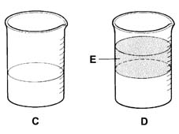
A. Quantity of oil in the old compressor B. Quantity of new compressor fluid E. Excess quantity of oil (already contained in the system)
Applies to: all engines; all production periods
COMPRESSOR
The compressor performs the following functions:
- Allows coolant to circulate through the climate control system
- Increases coolant pressure
- Increases coolant temperature
The climate control system may be fitted with the following compressors:
- SCROLL SC08 with orbital coil (1.2 8V FIRE)
- SCROLL SCS08 with orbital coil (1.9 Diesel)
These compressors consist of a fixed scroll (1) which is an integral part of the compressor casing and a moving scroll (2).
The moving scroll is made to revolve by a camshaft (3) connected to the pulley (8), which creates a chamber whose volume is reduced during the orbiting motion.
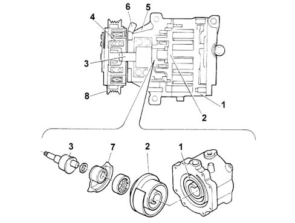
1 Fixed scroll (casing) 2 Orbiting scroll 3 Camshaft 4 Camshaft seal 5. Guard 6. Compressor electrical supply connection 7. Balancing mass 8 Pulley
Applies to: all engines; all production periods
COMPRESSOR
The adoption of these compressor, consisting of only two parts, has led to the following advantages:
- No gaskets are required.
- There are no radial or axial leaks.
- Low charge loss due to the absence of internal pipes and valves.
- As the scrolls wear down, the side seal is improved.
- The absence of valves, knocking and pulsing reduces noise.
Applies to: all engines; all production periods
COMPRESSOR ELECTROMAGNETS
The compressor electro-magnet coupling supply wiring now includes an electromagetic diode D1 and a resistance R1 (in series to one another and in parallel to the electro-magnet) in order to eliminate generated electromagnetic interference.
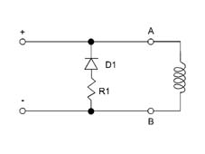
Applies to: all engines; all production periods
Difference between SC08 and SCS08 compressors
From a compression mechanism point of view, compressors SCS08 and SC08 are identical, the only difference being that compressor SC08 has an oil separator device (E), fitted in the gas outlet connector, which separates the gas from the oil which falls to the bottom of chamber (A) through the effect of gravity, whilst the gas escapes through the connector (D).
This device makes it possible to keep the quantity of oil introduced into the air conditioning system to a minimum.
In effect, by reducing the quantity of oil in the air conditioning system, the film of oil which is deposited on the walls of the heat exchangers (evaporator and condenser) is also reduced with a consequent improvement in thermal efficiency (it is possible to achieve improvements in the cooling of the air at the vent outlets of around 12 degrees Celsius).
If a quantity of oil is introduced into the air conditioning system and ends up in the gas compression chamber, it could damage the compressor because the oil is incompressible. To prevent this happening, three strip valves (x) are distributed along the gas compression route. If pressure in the oulet chamber increases excessively, these valves open to recycle the oil to the intake circuit through return port (C).
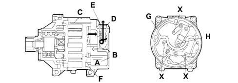
A. Oil B. Oil C. Oil return port D. Connector X. Safety valve
Applies to: all engines; all production periods
EXPANSION VALVE
The diagram below shows a section of the expansion valve and identifies the main components.
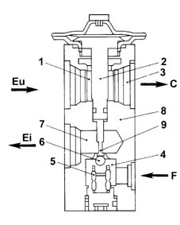
1 Evaporator fluid outlet port 2 Heat-sensitive element 3 To the compressor inlet connector 4 Pressurised fluid 5. Counter-spring 6. Ball and calibrated port 7. Expanded fluid (at evaporator intake connector) 8 Valve casing 9 Rod C. To compressor Ei. Evaporator input Eu. Evaporator outlet F. To drier filter
Applies to: all engines; all production periods
EXPANSION VALVE
This valve performs the following functions::
- Separates the high pressure circuit from the low pressure circuit;
- Expands the coolant (change from liquid state to gaseous state);
- Regulates the evaporation process (flow rate);
- Regulates evaporation temperature
- Protects the compressor from the coolant
The expansion valve controls the flow of fluid to the evaporator to achieve maximum system cooling power. Fluid flow and pressure are modulated as compressor rotating speed are altered.
This type of valve has two different routes for the coolant:
- A lower route allows the entry of fluid under high pressure in the liquid state from filter (F). It contains rod (9) driven by heat-sensitive element (2), counter-spring (5) and a ball valve housed in the calibrated port;
- An upper route allows fuel to return from the evaporator, where it reaches compressor (C) in the gaseous state under low pressure. It contains heat-sensitive sensor (2), which is connected at one side to the upper part of the diaphragm in the capsule and to the housing of ball (6) on the other intake side.
This valve performs three different functions in the system:
- Controls coolant flow
- Stabilises evaporation temperature
- Controls overheating
Applies to: all engines; all production periods
Control of coolant flow
The flow rate control function is exerted through the movement of the ball (6), connected via the rod (9), to the thermostatic sensor (2). Ball action is countered by spring (5). The position of ball (6) depends on pressure differences acting on a diaphragm located inside sensor (2); This in turn depends on evaporator fluid outlet temperature.
High outlet temperatures from evaporator (1) (corresponding to high heat dissipation levels) increase pressure inside thermostatic sensor (2); this brings about movement in rod (9) and connected ball (6) to increase passage cross-section and thus increase system flow.
The opposite takes place when the outlet temperature at evaporator (1) is low.
Applies to: all engines; all production periods
Stabilisation of evaporation temperature
Evaporation pressure is stabilised according to the temperature difference between evaporator inlet and outlet as follows: the lower part of the diaphragm is sensitive to the temperature of coolant at the evaporator inlet due to a port that links the inlet to the valve outlet downstream of the calibrated port, while the upper part is sensitive to the evaporator outlet temperature. Pressure changes between evaporator inlet and outlet impose temperature changes that act against the direction of rod (9) and connected ball (6) (thus helping to damp fluctuations).
Applies to: all engines; all production periods
Control of overheating
Overheating is controlledby spring (5), which is calibrated to allow effective operation with a preset temperature rise. This temperature rise (overheating) means the fluid in the evaporator is in a vapour state, i.e. contains no fluid that could be taken in by the compressor and damage the valves.
Applies to: all engines; all production periods
ELECTRICAL CIRCUIT COMPONENTS
The main components of the electrical circuit are:
- 4 speed rotary switch with A/C control;
- 4 speed additional resistance;
- Interior air fan motor;
- Electronic thermostat with external NTC (frost) sensor;
- 4 stage pressure switch
- Coolant compressor.
Applies to: all engines; all production periods
4 SPEED ROTARY SWITCH WITH A/C CONTROL
The A/C control is only present on versions with air conditioning. The diagram shows a view of the switch.
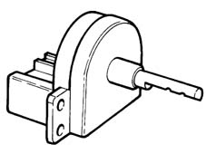
Applies to: all engines; all production periods
4 SPEED ROTARY SWITCH WITH A/C CONTROL
The main tasks of this module are to:
- Allow fan speed to be altered;
- Activate the compressor (only for the air conditioning system).
The switch control shaft can only be pressed to engage the A/C function in positions 1 - 2- 3 - 4, whilst in position '0' this function is not permitted, either mechanically or electrically.
When the A/C function is activated an amber LED (C) in the switch is lit up.
The diagram below identifies the position of the switch connectors.
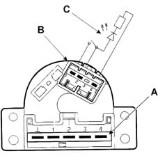
Applies to: all engines; all production periods
4 SPEED ROTARY SWITCH WITH A/C CONTROL
The pin out for connector A is shown in the following diagram.
Wiring diagram
Position | 0 | relay | relay | 3 | 4 | A/C FUNCTION |
|---|---|---|---|---|---|---|
0 | X | Open | ||||
relay | X | X | Closed/Open | |||
relay | X | X | Closed/Open | |||
3 | X | X | Closed/Open | |||
4 | X | X | Closed/Open |
The pin out for connector B is shown in the following diagram.
relay | + 15 INT/A |
relay | A/C signal output |
3 | Free (not connected) |
4 | LED earth |
Applies to: all engines; all production periods
ELECTRONIC THERMOSTAT
The diagram below shows a view of the thermostat and connector:
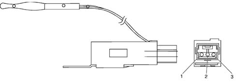
1 Aux power supply 2 Signal to 4-stage pressure switch 3 Earth
Applies to: all engines; all production periods
ELECTRONIC THERMOSTAT
This performs the following functions:
- Controls evaporator temperture
- Prevents too much ice forming on the evaporator
- Activates and deactivates the compressor
Electrical characteristics
Rated voltage | 13.5 Volt |
Operating voltge | 10 Volt - 16 Volt |
Insulation resistance | A 500 Volt A 10 MW |
Destructive discharge voltage | 1000 Volt for 1 minute |
Operating temperature | -40 ˚C; +85 ˚C |
Response time | 4 ± 1 σ |
Wheel | NTC with dual component epoxide resin impermeable coating or similar |
Electronic thermostat operation:
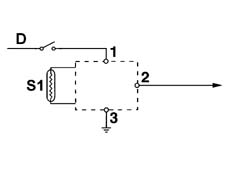
1 Aux supply 2 Signal to 4 stage pressure switch 3 Earth D. +15 INT/A S1. NTC sensor
Applies to: all engines; all production periods
ELECTRONIC THERMOSTAT
The system controlling the activation/deactivation of the compressor is operated by an electronic thermostat which acts on the compressor clutch relay according to the temperature of the evaporator, measured by an NTC sensor located on the evaporator fins on the side downstream of the air flow and it is not accessible from the outside (see digram below).
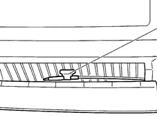
Applies to: all engines; all production periods
NTC sensor
The electronic thermostat activates and deactivtes the compressor as outlined in the table below:
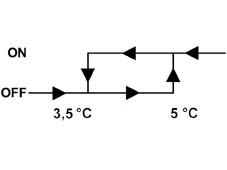
Applies to: all engines; all production periods
NTC sensor
From the table it can be deduced that at temperatures above 5 Celsius the compressor is activated, whilst at temperatures below 3.5 Celsius the compressor is deactivated.
Applies to: all engines; all production periods
4 STAGE PRESSURE SWITCH
This performs the following functions:
- Deactivates the compressor if coolant pressure is lower than 2.45 bars (level I) or higher than 28 bars (level IV)
- Activates engine cooling fan speed I if coolant pressure is higher than 15 bar (level II).
- Activate engine cooling fan speed II if coolant pressure is higher than 20 bar (level II).
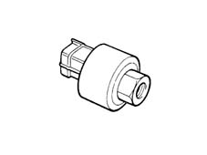
Applies to: all engines; all production periods
4 STAGE PRESSURE SWITCH
The 4 stage (frost) pressure switch is fitted on the coolant filter (right hand side, near the lamp).
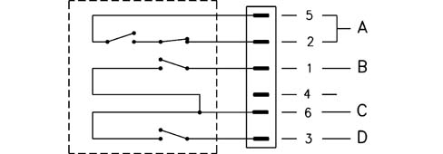
A. First and fourth stages (2 - 5) B. Second stage (6 - 1) C. Shared D. Third stage (6 - 3)
Applies to: all engines; all production periods
4 STAGE PRESSURE SWITCH
The pressure setting figures for the intervention of the various levels are summarized in the table below:
4 stage pressure switch setting figures (bar)
4 STAGE PRESSURE SWITCH SETTING FIGURES | |||
|---|---|---|---|
STAGE | OPEN | CLOSE | DIFFERENTIAL |
I˚ | 2.45 ± 0.35 | 3.5 | --- |
II˚ | --- | 15 ± 1 | 4 ± 1 |
III˚ | --- | 20 ± 1.2 | 4 ± 1 |
IV˚ | 28 ± 2 | --- | 6 ± 2 |
The 4 stage pressure switch has an interface with the injection wiring via an intermediate coupling D04.